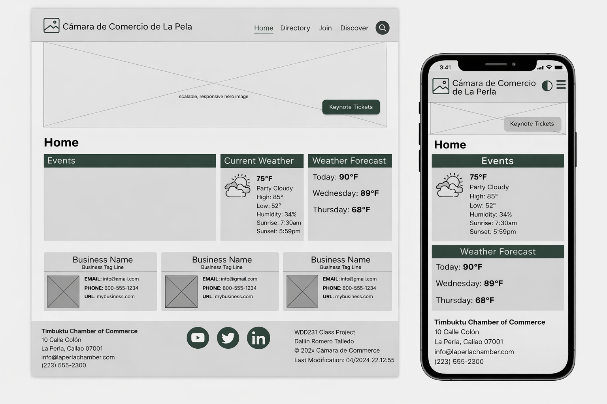

Website Site Plan: Chamber of Commerce
Site Name
Cámara de Comercio de La Perla — This website represents
the local Chamber of Commerce and is focused on supporting businesses,
entrepreneurs, and investors in the district of La Perla, Callao. The name
clearly identifies the organization and the community it serves.
Domain availability (optional):
laperlachamber.com
Purpose of the Site
The purpose of this site is to promote economic development in La Perla,
Callao by providing information about the Chamber of Commerce, its
services, events, and membership opportunities. The website will serve as
a connection point between local businesses and the community.
Scenarios
- How can I become a member of the Chamber of Commerce of La Perla?
- What business events or training sessions are available in Callao?
- How can I contact the Chamber for local business support?
Color Scheme
-
Dark Green (#1B5E20): used for headings, borders, and main
accents to represent growth and professionalism.
-
Near Black (#111111): used for primary text to create
strong contrast and readability.
-
Off White (#F9F9F9): used as the background color for a
clean and modern appearance.
Typography
-
Roboto: used for body text because it is modern and easy
to read.
-
Montserrat: used for headings to provide a professional
and clean appearance.
Wireframe Diagram
Below is a simple wireframe sketch showing the layout of the homepage for
both mobile and desktop views.
Mobile and Desktop View
